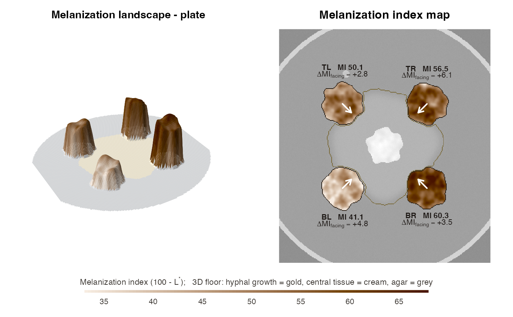

Melanization landscape: 3D shaded surface and 2D map of a plate
Source:R/plot_landscape.R
plot_melanization_map.RdTurns a plate into a "melanization landscape". In 3D, each colony rises
from the agar with a height and colour given by its local melanization
index (MI = 100 - L*), so darker tissue forms higher, browner relief. The
central fungus and its hyphae are painted on the floor. In 2D, the same MI field
is drawn over a faded photograph, with the hyphae and central core outlined.
An arrow on each colony points towards the central partner and is annotated with
the side-specific response delta_MI_facing.
Usage
plot_melanization_map(
x,
type = c("both", "3d", "2d"),
mi_range = NULL,
smooth_mm = 0.25,
relief_smooth_mm = 1.5,
taper_mm = 2.5,
grid = 180,
theta = -30,
phi = 32,
expand = 0.3,
main = NULL
)Arguments
- x
A
funmel_resultcomputed withkeep_images = TRUE.- type
"both"(3D + 2D side by side),"3d"or"2d".- mi_range
Optional common MI range
c(min, max)for colours and heights. Fix it when comparing several plates.- smooth_mm
Smoothing of the MI field (mm).
- relief_smooth_mm
Smoothing (mm) of the MI field used for the 3D heights (colours use
smooth_mm).- taper_mm
Width of the rounded colony edge in 3D (mm).
- grid
Approximate number of grid cells along the longer side of the 3D surface (speed vs. detail).
- theta, phi
Viewing angles of the 3D view (see
graphics::persp()).- expand
Vertical exaggeration of the 3D relief.
- main
Title.
Details
The MI field is smoothed with a Gaussian of smooth_mm to show tissue-
scale structure (margins, sectors, facing-side darkening) rather than
single hyphal ridges. In 3D the colony edges are tapered over
taper_mm, so colonies look like rounded relief instead of cliffs. The
colour scale is a single-hue sepia ramp from light to dark, because MI is
a magnitude and melanin is brown-black. Heights and colours share the same
scale, set by the observed MI range (or mi_range).
Examples
sim <- simulate_plate(width = 300, height = 400, seed = 42,
facing_darkening = 5, edge_lightening = 8)
res <- analyze_plate(sim$image, verbose = FALSE)
plot_melanization_map(res)
